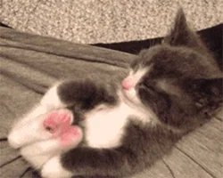
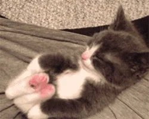
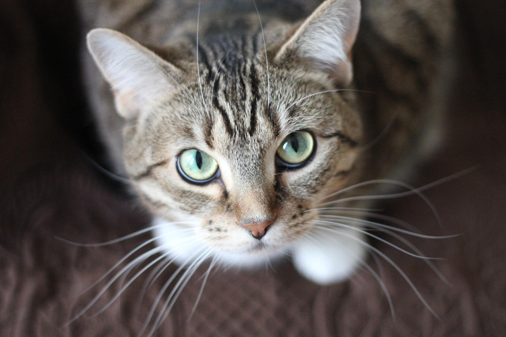
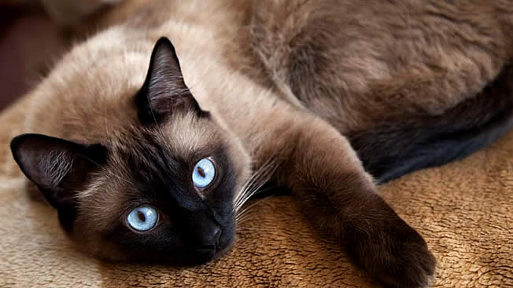
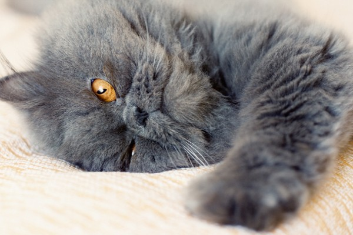
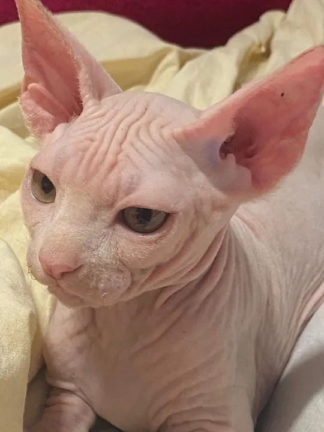

.webp)
.webp) 

.webp)
Gatos mais populares no Brasil
O gato (felis catus) é um mamífero carnívoro e quadrúpede pertencente à família Felidae e à ordem carnívora. É um animal doméstico apreciado por caçar ratos e ratazanas. Este animal possui unhas retráteis, ouvidos e olfação bem aguçados, uma notável visão noturna e um corpo flexível, musculoso e compacto. No Brasil, os gatos mais populares incluem tanto raças específicas quanto os adoráveis gatos sem raça definida (SRD), que dominam os lares brasileiros.
Abaixo a lista de gatos mais populares no nosso pais:
- Gato Sem Raça Definida (SRD)
- Popularidade: Representam cerca de 95% dos gatos no Brasil.
- Características: Variedade de pelagens e temperamentos, com forte vínculo afetivo com os tutores.
- Siamês

- Características: Pelagem clara com extremidades escuras e olhos azuis intensos.
- Temperamento: Extremamente sociáveis, comunicativos e afetuosos.
- Popularidade: Uma das raças mais populares no Brasil, conhecida por sua personalidade envolvente e aparência cativante.
- Maine Coon

- Características: Tamanho impressionante, pelagem longa e exuberante.
- Temperamento: Gentis, amigáveis e dóceis, ideais para famílias.
- Popularidade: Ganhando popularidade no Brasil devido à sua natureza amigável e carinhosa.
- Persa

- Características: Pelagem longa e sedosa, rostos achatados e olhos grandes.
- Temperamento: Tranquilos e afetuosos, preferem ambientes calmos.
- Popularidade: A beleza exótica dos Persas os torna uma escolha popular entre os amantes de gatos no Brasil.
- Sphynx

- Características: Famosos por sua falta de pelos e aparência exótica.
- Temperamento: Extrovertidos, amigáveis e afetuosos, adoram a companhia de pessoas.
- Popularidade: Embora incomuns, os Sphynx estão ganhando seguidores no Brasil devido à sua personalidade encantadora.